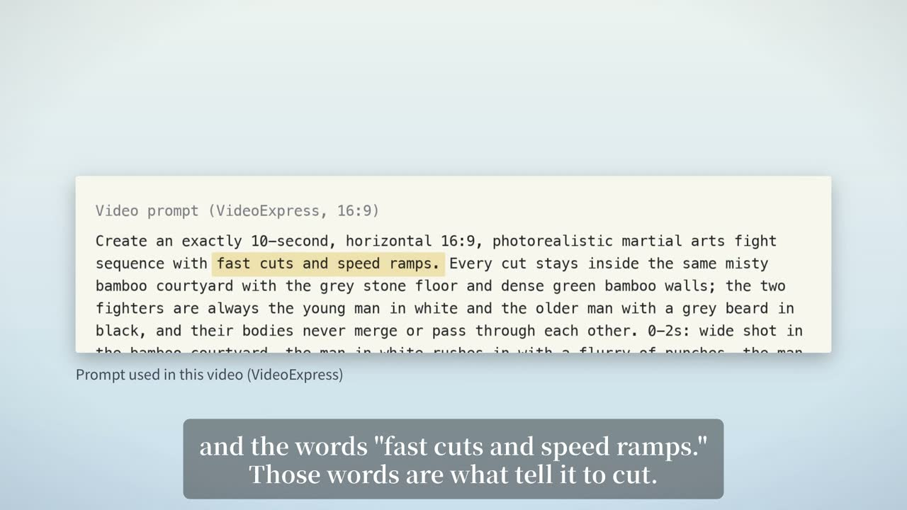
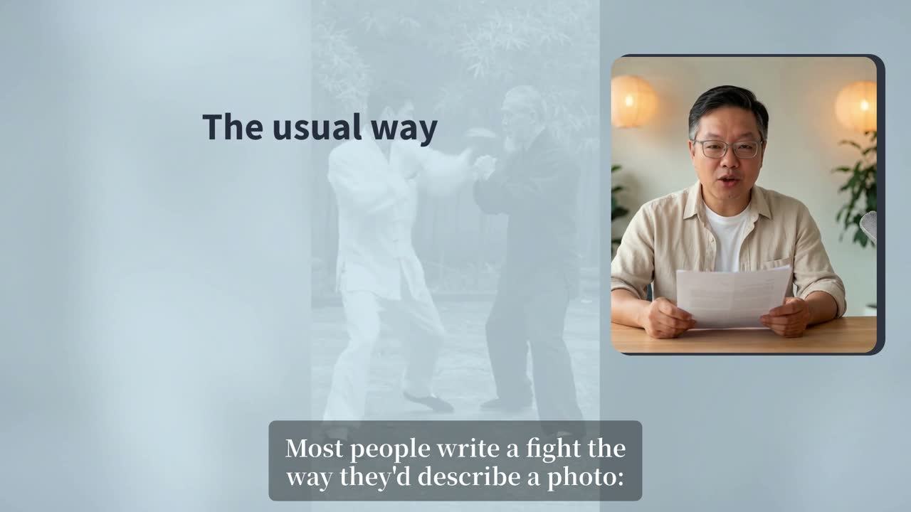
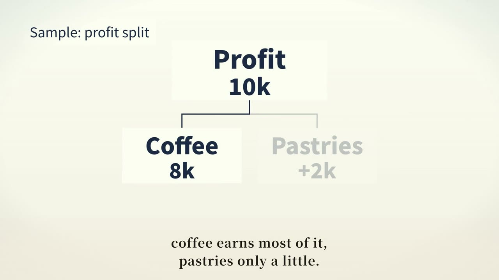

Everything an explainer needs, one part at a time
Every image below is a real film frame or real tool output.
Voice it on your own computer and keep the most accurate take of each line
Each line is recorded several times, transcribed and compared with the script, and the closest take is kept and joined. Words that get misread go into a shared pronunciation table that every later film uses.
- About ten seconds of reference audio is enough to voice a whole film
- No voice at hand? Design a synthetic one from a text description
27 scenes that move on the word you say
Line charts, pies, formulas, breakdowns, comparisons, lists, timelines, map routes, text highlighted passage by passage. In the script you write "appear when this word is spoken", and the program lines it up with the real timing of the voice. A quotation comes out of a blur word by word as it is read, a word is struck out and rewritten, a timeline slides from one stretch to the next, a clue board strings ideas together with red thread. 15 looks, and three of them can be tried side by side on this episode's own beats before anything is voiced.

Hand the beats that need live footage to a video generator
The tool works out how long each shot must be, writes the prompts and lays them out as a run sheet. By default it submits to VideoExpress and collects the results; with a Google AI plan, single shots can also come from Google Flow (Omni, Veo), made in your signed-in Chrome and filed with the prompt that made them; another platform, or generating by hand, works too if you put the files back under the expected names. Returned clips are measured and checked for bad first and last frames.
examples/brewing: a generated shot placed on the timeline, with the host circle and subtitles layered on as usual.A lip-synced host in three placements
The narration is cut into segments, sent for lip sync and placed back on the timeline. The host can sit in a corner circle, in a frame on the right, or fill the screen. You are shown a few look images first, and nothing is sent until you pick one.
- Use only your own likeness, or one you have the right to use
- The voice must fit the person on screen



Subtitles follow the voice, with no manual syncing
The voice track is transcribed locally to get the time of every word, and both subtitles and visuals are laid out from that timing. A timed subtitle file is also written for later use.

Rendering is not the end: the AI checks its own work
Every exported film is checked on the spot, whatever kind it is: audio and video the same length, no black frames inside, loudness and peak, sound effects really in the mix, and made from the current files. The result stays next to the film with its SHA-256, and only that file can be uploaded. For explainers the first and last frame of every beat go into one sheet; the agent has to read it frame by frame before reporting done, and reports what it cannot make out instead of guessing.

Matters of taste are listed and never fail the film: music that does not step aside between lines, an opening that holds one picture for more than five seconds (the cover does not count), generated shots on so many lines that the high points no longer stand out, an episode too close to the three before it. The thresholds come from measuring published films, and where each came from is written in the code.
Music and sound effects
Background music is composed by code from the on-screen events, so sections start on the beat; for a song with lyrics, use MiniMax Music 3 on your own Colab or Google Flow Music. Sound effects are lined up with the moment each element appears.
Start and release checklists
Before anything is generated or uploaded, the questions that need asking are answered one by one: rights, sources, whether anyone is depicted wrongly. Unanswered items stop the run.
YouTube upload
Schedule, thumbnail, description and the altered-content label go up in one step. Whether to upload and when to publish is your call.
Side by side with a film you like
Measure the rhythm of a film you admire next to your own: shot lengths, how fast the opening changes picture, how much is speech, how quiet it gets between lines, plus a contact sheet with the narration under each frame. It measures; it does not judge for you.